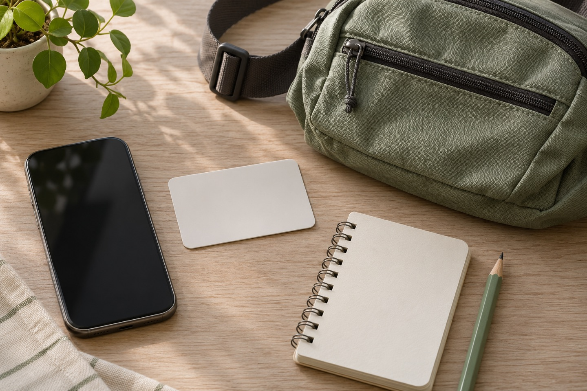

A first subway trip is easier when you decide on one destination before entering the station. Save its address, check the journey and give yourself a little extra time. These notes are a starting point for planning, with official links for the details.
Prepare the card before the gate.

The Korea Tourism Organization lists Tmoney and EZL as reloadable prepaid transport cards sold and topped up at convenience stores. Seoul’s visitor guide also describes single-journey subway tickets. Choose according to your plans, and check the current purchase and top-up options before relying on a particular payment method.
Keep the card somewhere easy to reach. Follow the reader instructions when entering and leaving the subway. If a gate does not accept it, step aside and ask station staff rather than repeatedly trying to pass through.
Visit Korea — Transportation Cards ↗
Read the direction, then follow the signs.

Visit Seoul explains that lines are colour coded, station signs include English, and exits are numbered. Its subway guide links to an interactive map with journey information. Check your destination and direction before boarding, and use the transfer signs for the line you need.
Save the destination name in Korean as well as English so you can show it if you need help. If you stop to look at your phone, move out of the flow of people first. Follow the actual station signs and announcements when they differ from a saved plan.
Visit Seoul — Subway guide and map ↗
Include the walk after the train.

Choose the exit that suits the place you are going, then look at the walk from there. A station name alone is not a complete door-to-door plan. If you need an elevator or a route without stairs, check the relevant station facilities before choosing your exit.
Wear shoes you already find comfortable. Keep space in your schedule for finding the entrance, changing lines and walking at the other end, especially when you have a timed booking.
Keep the return journey simple.

A manageable bag and a saved accommodation address can make the return less fiddly. Before a late outing, check the last train for your actual route and direction. Do not treat a general city operating-hours summary as a promise that your particular connection will still be running.
Fares, payment options and service arrangements can change. Use the official links above for current information; this guide does not quote a fare or guarantee a transfer discount.
Official sources checked November 10, 2026. The Visit Seoul page includes a fare table dated 2023, so its figures are not presented here as current prices. Packing and pacing ideas are general suggestions. All four images are AI-generated explanatory illustrations: two made for this guide and two reused after visual review. They do not document a personal journey or current station conditions.